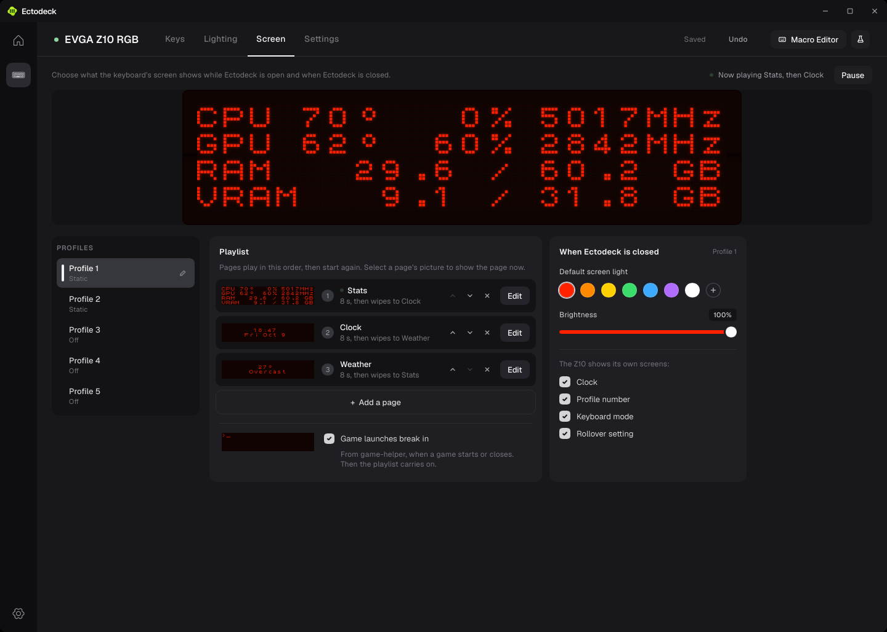
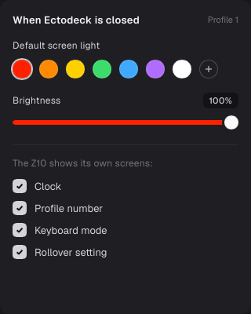
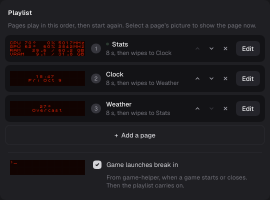

Ectomatter · Screen tab
The playlist, rethought
Today each page is a thin row carrying seven small parts, and its picture is too small to read. This gives each page one card: the page's name, how long it shows and how it comes in, and a picture of the screen you can read. Order is the order of the cards, and you drag a card to change it. A bar in the screen's light marks the page playing, riding a track down the box's left side.
The new box, in the page
The app as it draws the Screen tab now, with the Playlist box drawn again at its true size. The pictures are the Z10's own font, two pixels a dot. Select a card to play it; drag a card to move it; hold the pointer over a card for Edit and Remove.

Playlist
Pages play from the top down, then start again. Select a page to show that page now; drag a page to reorder the playlist.

Marking the page playing now
The bar, your pick. It is the active profile's bar (4 wide, rounded, white, #F4F4F5), inside the playing card, 8px in from its edge, half the card's height and centered; the card's name lines up with its top. When a page's time runs out, the bar fades out on that card in under a fifth of a second, and only then fades in on the next. The card's own shade means only "the pointer is here", so hover and playing never look alike. Time left is a plain count in the playing card's first line.
The other ways, kept on the switch to compare: Numbers (the playing page's number lit, the rest faded), Lit picture (only the playing card's picture at full light), Light edge (a bar inside the playing card), and the First round.
Today
The same three pages in today's box.

What changed, and why
The runner-up: a filmstrip
The pages side by side across the page's width, under the screen, the playing one shaded. It reads like the screen's own timeline, but at 320 wide a picture, the strip holds three pages before it scrolls sideways, and it needs the whole row: When Ectomatter is closed would move below it and the page would scroll.
How it would be built
| Part | Value | Note |
|---|---|---|
| Box | 540 wide, as today; its height from its cards | Beside Profiles and When Ectomatter is closed, as now. Six or more pages scroll inside the box. |
| Card | 88 tall, 10px corners; well, hover well, chosen, chosen and hovered | The four shades the app uses for every choice. |
| Picture | 320 × 64, the screen's own picture at two pixels a dot | Drawn as the screen is drawn now, at a whole number of pixels a dot. |
| Lines | The name; "8 s on screen"; "Wipes in", "Dissolves in", "Types in" or "Cuts in" | With one page: "Shows all the time", and no transition line. |
| Playing | The playing card's picture at full light, the others at 42%; its first line "Playing, N s left", counting down in whole seconds | The card's shade is left to the pointer, so hover is never mistaken for playing. |
| Paused | The picture stays at full light; the line reads "Paused on this page" | The keyboard's screen still shows the page, so the picture still does. |
| Edit, Remove | Two 28px buttons in the card's corner, on hover | Remove is left out on the last page. |
| Dragging | The card lifted under the pointer, a space where it will land | Let go to drop it; the playlist saves. |
| Game launches | A footer under a hairline: the checkbox and its note | No picture: it is a setting, not a page. |